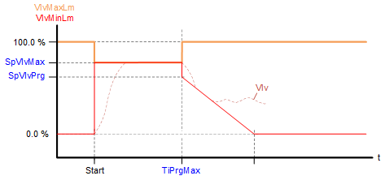
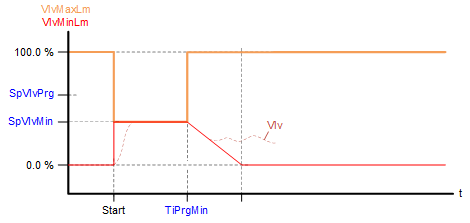
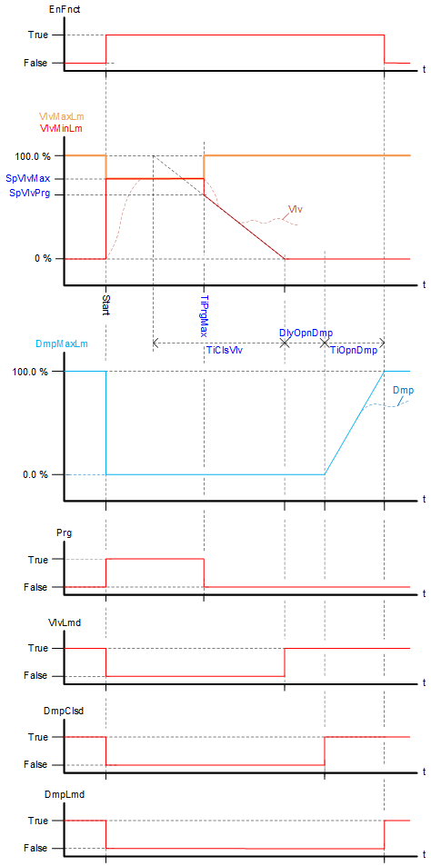

[PURGE] Purge optimization
When switching on the plant, closed-loop control cannot protect the heat exchanger fast enough from freezing. The heat exchanger must be preheated to ensure protection.
PURGE controls the valve position of the heating coil and the position of the mixed air dampers at plant startup.
PURGE can use various plant types and be used with water or steam.
Functioning
Start purge optimization
Purge optimization starts, when the following conditions are met:
- The plant is started ([EnFnct] = 1).
- The plant was switched off for at least the minimum switch-off time [TiOffMin] ([EnFnct] = 0 for at least [TiOffMin]).
- The outside temperature [TOa] is lower than the low limit for outside temperature [TOaLoLm].
Calculate purge time
The estimated purge time [EstmPgti] is calculated based on the outside temperature [TOa] and the characteristic as per the following setting values:
- Maximum purge time [TiPrgMax]
- Minimum purge time [TiPrgMin]
- Design temperature low [TDsgnLo]
- Lower limit for outside air temperature [TOaLoLm]

Calculate valve position
The setpoints for the maximum valve position [VlvMaxLm] and minimum valve position [VlvMinLm] during the purge are calculated based on the outside temperature [TOa] and the characteristic as per the following setting values:
- Setpoint for maximum valve position [SpVlvMax]
- Setpoint for minimum valve position [SpVlvMin]
- Design temperature low [TDsgnLo]
- Lower limit for outside air temperature [TOaLoLm]

During purge, the maximum valve position [VlvMaxLm] and the minimum position [VlvMinLm] are set to the same value.
The maximum valve position [VlvMaxLm] and the minimum valve position [VlvMinLm] differ prior to and after purge.
Example for [TOa] = [TDsgnLo]:

Vlv = Valve position
Example for [TOa] = [TOaLoLm]:

Vlv = Valve position
During active purge optimization, the maximum valve position is sent to output [VlvMaxLm] and the minimum valve position to output [VlvMinLm].
Purge function process
- The purge function starts by switching on the plant, i.e. [EnFnct] = 1. An active purge function is displayed at output [Prg] with value 1.
- During purge, the outputs for the maximum valve position [VlvMaxLm] and the minimum position [VlvMinLm] are set to the calculated value. The valve moves to the corresponding position and the heating coil starts to heat. Output [VlvLmd] indicates that the damper position is limited by the purge function.
- In addition, output [DmpMaxLm] is set to 0 [%] and the air damper is thus closed. Output [DmpClsd] indicates that the damper position is maintained in the closed position by the purge function.
- After the calculated purge time expires, the maximum permissible valve position [VlvMaxLm] is set to 100 [%]. The minimum valve position [VlvMinLm] is set to the setpoint at the end of the purge time [SpVlvPrg], unless the present value from [VlvMinLm] is less than [SpVlvPrg].
- If external logic determines that the heating coil is sufficiently warm prior to the end of the purge time, the purge time can be concluded early over input [CnclPrg].
- After the calculated purge time expires, the valve is deployed to the minimum valve position [VlvMinLm]. The time for closing is based on the valve close time set on input [TiClsVlv]. While closing, the output [VlvLmd] indicates that the valve position is limited by the purge function.
- The delay [DlyOpnDmp] starts as soon as the minimum valve position [VlvMinLm] reaches 0 [%].
- The air damper may only start to open after the delay expires. The time to open the air damper is based on the opening time for the air damper set at input [TiOpnDmp]. While opening, output [DmpLmd] indicates that the damper position is limited by the purge function.
- The minimum switch-off time off [TiOffMin] restarts if the plant is switched off ([EnFnct] = 0). If the plant is switched on again within in this time, the purge function does not start, since the heating coil is sufficiently warm and therefore protected against freezing.

Vlv = Valve position
Dmp = Damper position
Cancel purge function
Purge function is canceled in the following cases:
- The plant is switched off ([EnFnct] = 0).
- If the outside temperature [TOa] exceeds the low limit for outside temperature [TOaLoLm].
After cancelation, the purge function is only switched on, if the plant is restarted ([EnFnct] = 1).
Pins
Input | Description | Data type | Default value |
|---|---|---|---|
|
EnFnct | Enable function Enables the function. | Boolean | 0 |
0 - The function is not enabled. | |||
|
TOa | Outside air temperature Actual value for the outside air temperature. | Real | 0 [°C] |
|
TiPrgMax
| Maximum purge time Maximum purge period | Time | 300 [s] |
|
TiPrgMin | Minimum purge time Minimum purge duration | Time | 30 [s] |
TDsgnLo | Lower design temperature. Lower design temperature for the ventilation plant | Real | -15.0 [°C] |
|
TOaLoLm | Low limit for outside air temperature Lower design temperature for the ventilation plant Purge does not start if [TOa] > [TOaLoLm]. | Real | 9.0 [°C] |
|
SpVlvMax | Setpoint for maximum valve position Maximum valve position during purge | Real | 100.0 [%] |
|
SpVlvMin | Setpoint for minimum valve position Minimum valve position during purge | Real | 30.0 [%] |
|
TiOffMin | Min.switch-off time Minimal switch-off time prior to restart | Time | 900 [s] |
In order for purge to start when switching on the plant, the plant must be switched off at a minimum for this period. Otherwise, the heating coil is sufficiently warm. | |||
|
TiClsVlv | Closing time for valve Time to close valve from [SpVlvMax] to 0 [%] | Time | 150 [s] |
|
SpVlvPrg | Valve setpoint at end of purge Setpoint for the valve position after completing the purge process. | Real | 100 [%] |
|
DlyOpnDmp | Delay before opening damper After [VlvMinLm] is retracted to 0 [%], delay [DlyOpnDmp] must expire before the air damper is allowed to open. | Time | 30 [s] |
|
TiOpnDmp | Opening time for damper Time to open the air damper from 0 [%] to 100 [%] | Time | 60 [s]
|
|
CnclPrg | Cancel purge Transmits the information from external logic that the desired effect of the purge was achieved earlier than expected. | Boolean | 0 |
0 - Purge operates normally. | |||
Output | Description | Data type | Default value |
|---|---|---|---|
VlvMaxLm | Maximum valve opening Maximum valve opening during purge | Real | 100.0 [%] |
VlvMinLm | Minimum valve opening Minimum valve opening during purge | Real | 0.0 [%] |
DmpMaxLm | Maximum damper opening Maximum air damper opening | Real | 100.0 [%] |
|
Prg | Purge Indicates whether purge is active. | Boolean | 0 |
0 - Purge function is not active. | |||
|
VlvLmd | Valve position limited Indicates whether the valve position is limited by the purge function. | Boolean | 1 |
0 - Limitation active. | |||
|
DmpClsd | Damper closed Indicates that the purge function requested the air damper to close. | Boolean | 1 |
0 - Air damper requested to close. | |||
|
DmpLmd | Damper position limited Indicates whether the damper position is currently limited by the purge function. | Boolean | 1 |
0 - Limitation to damper position active. | |||
|
EstmPgti | Estimated purge time Indicates the estimated purge time, calculated based on the values from inputs [TOa], [TOaLoLm], [TDsgnLo], [TiPrgMax] and [TiPrgMin]. | Time | 0 ms |
|
SysUnits | System of units Indicates the system of units used by the block. | Integer | 1: International system of units (SI) (fallback) 1...5 |
1: International system of units (SI) (fallback) | |||
|
ErrCode | Error code indication | Integer | 0: No error |
= 0 - No error | |||